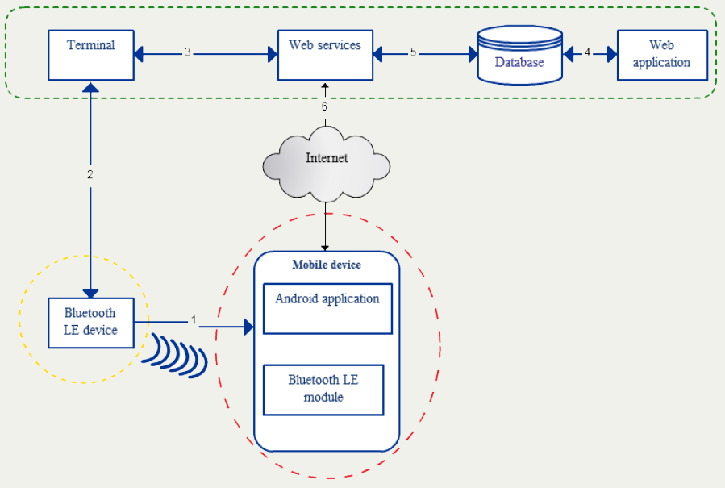
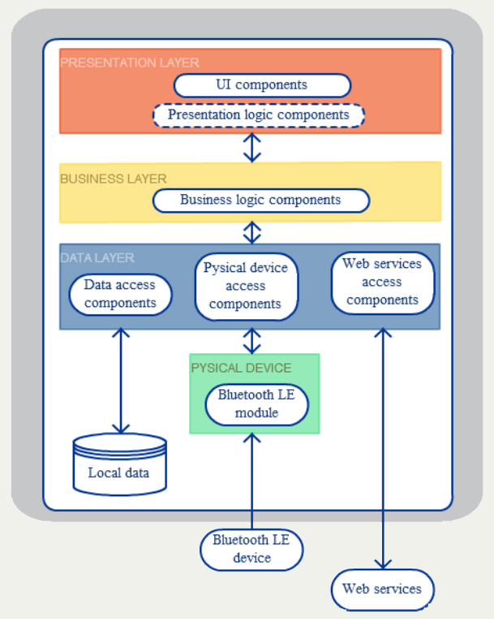
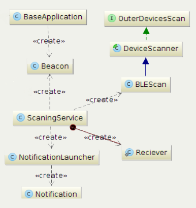

SeierFriendApp mobile application is intended for visitors of Shopping city Seiersberg in Graz. Visitors can become "Friend of Seiersberg" and on each visit they collect points.
There are three levels of friends:
Currently Evolaris has installed four terminals inside shopping city center where “Friends of Seiersberg” can see their point status and vouchers using their NFC card.
The main goal of this project is to explore the possibility of replacing NFC cards with Bluetooth Low Energy technology.
Instead of NFC cards users would have all the terminal functionality on their smartphones.
After visiting Graz, Evolaris mentors defined use case for this application.
So.. the use case is:
Based on use case, the functional requirements are:
System architecture
Application architecture
Application modularity and further development
